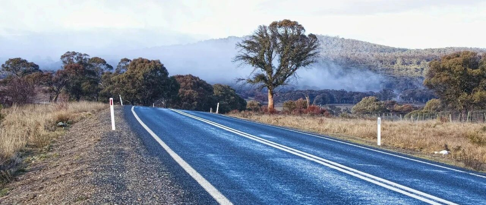

听见未来的回响~
月初美股连续多日创历史新高时，我在评论区置顶时说:
要谨慎，不轻易追高;但同时走势方面，会是“日拱一卒”，每天涨一点，不断把历史新高的天花板往上顶一顶，涨到一定程度，就回调一波，再上涨，也就是震荡+上涨，二者并行。
如今正在应验这一走势。
联合健康和预期的一致，在300-318/321之间来回震荡，是做T的合适区间;
谷歌重新站上181美元，离开186减仓节点还有一些距离，我做T的部分还有一些没清完，设置好在186和192两个节点清空。
当然，7成底仓依然没有动，只是谷歌上涨较弱，导致做T部分迟迟没有达到和触发减仓节点。
谷歌我还是看好的，人工智能对它有影响，但它本身也在做这块业务，而且人形机器人它也占有一席之地。
亚马逊站上225美元，我做T部分减仓顺利触发，还有一个节点是230，触发后，做T部分就清完了，7成底仓依旧没动。
微软站上503美元，我卖了5%的底仓部分，把这段时间抄底买进来的微软成本控制到100美元以内，后续就没打算再卖了，整体还是负成本。
台积电和Meta都在我减仓后，遭遇价格回撤，这两个接下去应该不会有任何操作了，目前成本已经控制在很低的价位，除非是能遇到大跌，那会积极买入。
博通和AMD也涨得不错，AMD已经修复146.42美元，之前说过还会再往上涨一涨，160-165美元是个重要的节点。这两个我负成本了，在低点抄底进来，至今已经都涨翻倍，作为英伟达的备胎，就没打算再做操作了。
英伟达站上164.92美元，成为第一家4万亿美元市值的企业。4月大跌时，英伟达最低点83美元（盘前）左右。
如今英伟达不算期权和两倍做多这些，仅正股都接近翻倍，我们公司的伙伴赚麻了，小助理33万美元全部买英伟达，现在浮盈95%，每天如沐春风，我笑着说他没出息，这才到哪，赚这么点钱就飘了，一下将他锤回地面。
想想也挺有意思的，我自己年轻时赚钱多也会飘，不过一般很快就过去了，快就两三天，慢就一两个月。
要么去接触更高维度的群体，汲取他们身上的能量;要么去看看自己买不起的东西;要么去医院走走看看，都说死亡面前人人平等，其实也不平等，有的人穷困潦倒而死，有的人天价续命针接连伺候着…
早点意识到社会和现实的残酷，人就飘不起来。
大约七八年前，我开始意识到，很多时候，阶层是很难跨越的，有钱也不行，看的还是资源和背景。
然后就把重心往美股科技板块转移，这些年感觉挺好的，整个人不会再有那么多压抑和被制约的感觉。
我很喜欢站在当下，听见未来的回响，特别有收获和成就感。
… …
旅行到了第二站，德国。
柏林的天气很不错，这几天都在14-23℃，欧洲天气的酷热，我暂时还没感觉到。
据说酷热集中在地中海沿岸，其他地方即便夏天再热，也就集中在那一两星期，平均气温25℃。
德国呆到17日左右，然后往南去意大利，之后是法国，最后瑞士，预计8月10日回国。
从今天开始，未来几天准备带娃去参观德国的一些企业，主要看看奔驰、西门子、博世、巴斯夫这几家企业，朋友帮忙做了参观安排。其他的也有想参观的，奈何没有熟悉的人可以引领。
在德国之行开始之前，我先跟娃们讲了德国的一些常识。
德国在欧盟众国家中算比较争气的，产业完备，有自己核心的支柱和产业:
汽车制造和配件产业在全球有举足轻重的地位，坐拥奔驰、宝马、大众、保时捷、奥迪等汽车品牌;
西门子、博世、蒂森克虏伯等精密机械、自动化设备在全球处于领先地位;
拜耳、巴斯夫、默克等企业在全球化工和制药行业占有一席之地;
“工业4.0”为代表的智能制造体系，让德国在精密工程、机器人自动化、航空航天、可再生能源、环保等领域有突出成就。
产品主要出口市场是:欧盟、老美和中国。
德国的中小型企业，往往具有较高的附加值，在B2B工业产品上专注于细分市场，有高度专业化的竞争力，又有家族经营的特点，工匠精神和创新能力都很强，所以德国的很多中小企业是某个细分领域的“隐形冠军”。
德国和日本的企业有些相似，这两个国家在工业品类上，也是老竞争对手。
德国实行“双元制教育”模式，即理论学习+企业实习，这样一来确保了制造业和工程行业有源源不断的人才供应;同时还有众多一流大学、研究机构支持科研创新。
德国的金融和保险业在欧洲和全球也不错，算得上有重要地位，德意志银行和德国商业银行在全球具有较高影响力;德国安联集团是全球最大的保险企业之一。德国第五大城市法兰克福，是歌德的故乡，被誉为“美茵河畔的曼哈顿”，欧洲央行等都集中在这。
德国拥有“入常”的实力，但政治上有短板;制造业等产业，过度依赖咱们的市场;能源主要依赖外部输入，容易出现危机;工业竞争力面临一定程度的下降;老龄化等致使劳动力出现短缺的问题。
此外，德国在AI、半导体、软件等科技创新和数字化转型方面，会比较弱。
35万平方公里的疆域面积，差不多相当于我们的江苏+安徽。
德国历史上有过侵略性为。小儿子问，都说历史是由胜利者书写的，那么对外扩张这种行为，失败了是侵略，那么如果成功了，那是不是可以称为“多民族融合”？
我有点诧异他会这么想，不过想想也对，经常鼓励他们要独立思考，有自己的想法和看法。
确实，对外扩张的路，如果成功了，在掌握话语权的胜利者角度上，可以说是“多民族融合”的历程;失败了，那自然就丧失了话语权和正义性，妥妥的侵略。
不同的立场和角度看，同一件事会有完全不一样的结论。
就这样吧。
免责声明：本人提供的信息仅供参考，不构成投资建议。本人的交易不代表任何立场；投资者应根据自身财务状况、投资目标等情况自主做出投资决策并承担投资风险。投资有风险，入市需谨慎。